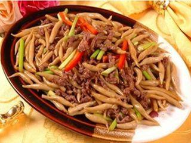

兔头
- 大同兔头是山西大同特色传统名菜之一，属于典型的北方菜式，味道香辣。大同兔头不仅肉质细嫩，味道鲜美，而且易于消化，营养丰富，深受当地人和游客们的喜爱。
- 据说，大同兔头日销能达四万只，大同的帅府街上众多兔头店食客如云，故这里也被人们称作兔头一条街。尤其对于70、80后，简直就像00后看到辣条一样。
详情
凉粉
- 浑源凉粉有着数百年的历史，是大同市浑源县的特色小吃。
- 浑源凉粉以土豆淀粉为原料，加入适量的明矾，搅成糊状，在火上滚熟，凉冷倒出即成。食用前加上莲花豆、豆腐干、辣椒油、葱、蒜、香菜等调料，凉粉色泽清亮、滑嫩爽口，莲花豆香酥可口，辣椒油香辣诱人。
详情

莜面栲栳栳
- 莜面栲栳栳又称莜面窝窝，是大同地区的家常美食，因形如柳条编成的容器“栳栳”而得名。栲栳栳就是用莜面蒸制而成，配以羊肉，香味浓长，成形美观。
- 大同至今广为流传着这样的民谣：“大同三件宝，筱麦、山药、大皮袄”，可见这里的人们对莜面特别钟爱，奉为至宝。
详情
刀削面
- 山西是面食之乡，大同刀削面是山西省知名的传统小吃，有“面食王中王”的称号。
- 大同刀削面对和面的技术要求较严且妙在刀功，一般使用特制的弧形削刀。刀削面的面条又薄又韧，看起来像片片柳叶，吃起来筋道软滑，还可以配上肉块、卤鸡蛋、丸子、豆腐干等食用。
详情
羊杂
- 大同羊杂的吃法是将羊心、羊肝、羊肺、羊肚、羊肠等杂碎切成碎块，浇上羊肉汤，配上丝滑的山药粉条，以油、盐、葱、姜、蒜、胡椒调味即成。
- 热气腾腾的羊杂红白相间，口感油而不腻、质醇味美，令人垂涎欲滴，还具有驱寒暖胃的功能。但凡是外地人来到大同都会品尝一碗又辣又香的羊杂粉汤，才觉不虚此行。
详情
浑源烧酒
- 浑源烧酒属蒸馏酒类，发酵的酒经过蒸锅器蒸、贮存、稀释、勾兑等后配制而成的酒。
- 浑源酿酒业从1995年后跃入全国酿酒行业500之强，达到鼎盛时期，成为仅次于山西汾酒厂的酿酒骨干企业
详情
苦荞茶
- 山西大同苦荞茶，以苦荞为原料制作的饮料。
- 山西大同苦荞茶的麦籽粒，营养价值颇高，含蛋白质11．9%，远高于大米、玉米；脂肪2．4%，超过小麦、大米和薯类等。
详情
回到顶部
返回首页